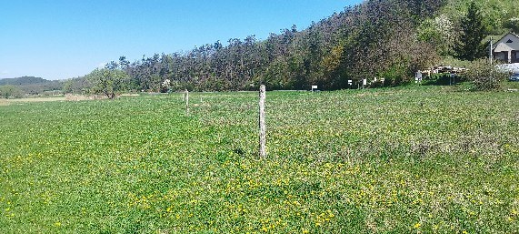
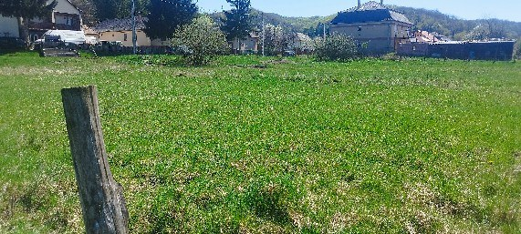
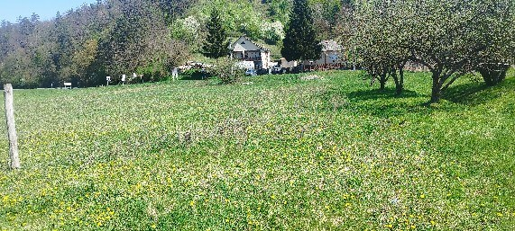
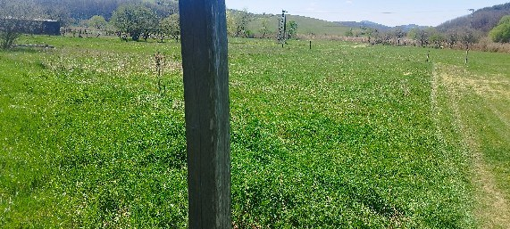
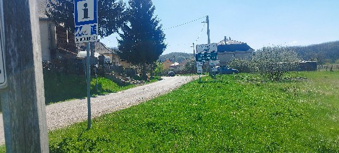
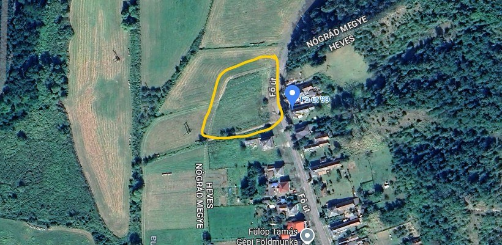

Ideal for retreat, guesthouse, lifestyle relocation or small-scale project.
Ideal for foreign buyers looking for affordable land in Hungary.
A rare opportunity to acquire a 3636 m² flat, fully usable plot located at the end of a residential line in Istenmezeje, Northern Hungary.
The land borders open green areas on multiple sides, providing privacy, low-density surroundings and uninterrupted natural views.
There is no existing building on the plot, allowing clean and unrestricted project development. The boundary has been recently surveyed.
The size allows multiple functions to coexist, which is rarely possible on smaller plots.
Istenmezeje, Heves County, Northern Hungary
Selected site photos showing the plot, open views, access and boundary context.





Satellite overview with the plot marked for clear orientation.

István Dancsó
Email: istvandancso68@gmail.com
Phone / WhatsApp: +36 30 394 6121
Direct messages are welcome.